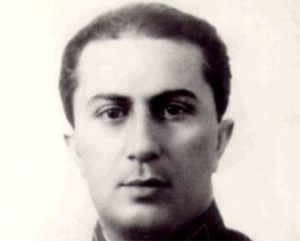

As forças alemãs capturaram o filho de Stalin, Stalin não se importou – ele o desprezou

As forças nazistas capturaram o filho de Stalin, Yakov Dzhugashvili. Quando os nazistas propuseram trocá-lo pelo marechal de campo capturado Friedrich Paulus, Stalin respondeu: “Não trocarei um marechal por um tenente”. Dzhugashvili foi executado posteriormente em 1943.
Foi uma façanha ousada que envolveu o uso de mais de três mil tanques, três milhões de soldados alemães em 150 divisões e mais reforços dos italianos, romenos e finlandeses. Os alemães estavam no apogeu de seu poderio militar em termos de tática, treinamento, moral e equipamento.

Yakov, filho mais velho de Joseph Stalin
No momento em que os alemães cruzaram a fronteira, a resistência soviética enfraqueceu diante de uma força tão superior – por um tempo, parecia que outra Blitzkrieg estava sendo feita e que toda a Rússia cairia imitando as bravas Polônia e França em os anos 1939 e 1940, respectivamente.
Nas primeiras semanas após cruzar a fronteira soviética-alemã, a Wehrmacht capturou milhões de soldados do Exército Vermelho – entre eles um homem chamado Yakov Dzhugashvili. Ele passaria o resto de sua vida em cativeiro alemão até 1943, quando morreu no campo de concentração de Sachsenhausen.

Joseph Goebbels estava no sétimo céu – o porta-voz franco de Hitler, que sempre tinha algo a dizer, compartilhou sua euforia com alguns de seus melhores materiais de propaganda até então. “A total ignorância prevaleceu no Exército Vermelho”, anunciou o Ministro da Propaganda alemão do protocolo de interrogatório do prisioneiro de guerra chamado Yakov Dzhugashvili.
Ele continuou: “As tropas soviéticas estavam mal organizadas e lamentáveis - imprudentes, estúpidas e até idiotas, pois os generais enviaram suas unidades diretamente para o fogo e para a morte.”
O homem chamado Yakov Dzhugashvili, que foi capturado pelos alemães em Smolensk, poderia ter sido mais conhecido pelo sobrenome Stalin. Seu pai era nada menos que o próprio líder soviético.
Assim que essa notícia se espalhou, o aparelho de propaganda nazista altamente eficiente estava funcionando a toda velocidade. As emissoras espalharam a notícia do registro do interrogatório em russo para prejudicar a moral e convencer os soldados do Exército Vermelho a desertar. A Luftwaffe alemã espalhou milhares de panfletos nas linhas soviéticas com fotografias retratando o filho de Stalin cercado por oficiais alemães.
Filha presa, neta enviada para uma casa
Enquanto isso, em Moscou, o déspota Stalin fazia sua nora Julia sofrer em nome de seu marido. Ela foi imediatamente presa, e ela e a filha de Yakov internadas em uma casa. Stalin sempre tratou rapidamente dos traidores – assim como com seu filho primogênito.
Quem foi exatamente Yakov Dzhugashvili?
Para ser franco, ele era alguém que seu pai não gostava muito. Pai e filho nunca se deram bem. Stalin supostamente uma vez se referiu a seu filho como um mero sapateiro.
Yakov nasceu em 1907 como o mais velho de seus quatro filhos e o resultado da união entre o ditador soviético autocrático e sua primeira esposa, Ekaterina Svanidze, que morreu poucos meses após o parto.Stalin lamentou a seu biógrafo, Simon Sebag Montefiore, no funeral de sua esposa, que foi o amor de sua vida: “Com ela morreram meus últimos sentimentos calorosos por todos os seres humanos”. E sem mais delongas, ele friamente deixou seu filho para ser criado por parentes.
O tio materno de Yakov o criou. Foi com seu tio que ele teve a inspiração de buscar o ensino superior e deixar sua Geórgia natal para Moscou. Ele logo aprendeu russo (sua língua nativa era o georgiano) e acabou se formando na academia militar.
A relação entre pai e filho sempre foi contenciosa. No entanto, a gota d’água que quebrou as costas do camelo foi quando Yakov começou a viver com Zoya Gunina, filha de um padre ortodoxo. Furioso, Stalin nunca perdoou o filho e se recusou a aceitar a jovem, que havia sido ex-colega de classe de um jovem Yakov.
A tensão tornou-se tão grande para Yakov que o jovem profundamente ferido tentou cometer suicídio. No entanto, nessa empreitada, ele também desapontou seu pai quando a bala apenas perfurou seu pulmão, errando o coração. Essa ação levou às famosas, mas dolorosas, palavras de Joseph Stalin: “Você não conseguia nem fazer isso direito.”
Por fora pai e filho se pareciam, mas por dentro não podiam ser mais diferentes. Enquanto Stalin era brutal e calculista, a meia-irmã de Yakov, Swetlana, descreveu seu irmão como “pacífico”, “quieto” e “modesto”.
Enquanto seu pai subia a novas e intransponíveis alturas no Politburo soviético, Yakov, sem qualquer patrocínio de seu poderoso pai, tentava estabelecer sua própria existência. Ele se tornou engenheiro e trabalhou em uma fábrica de automóveis em Moscou, que obviamente recebeu o nome de seu pai todo-poderoso.
Só quando Yakov entrou no Exército Vermelho Stalin pareceu começar a respeitá-lo. No início de maio de 1941, Yakov recebeu seu primeiro comando. Ele foi encarregado de uma unidade de obuseiros. Algumas semanas depois, os alemães invadiram.
“Vá e lute”, ordenou por telefone o ditador ao filho após o início da invasão. Em 9 de julho de 1941, um dos oficiais comandantes de Yakov atestou sua bravura, mas cinco dias depois foi dado como desaparecido.
Joseph Stalin considerou a captura de seu filho um ato de traição
“Ele nem mesmo conseguiu atirar em si mesmo”, Stalin supostamente comentou em resposta ao anúncio alemão da captura de seu filho. No entanto, ao mesmo tempo, ele proibiu categoricamente as missões de combate de seu outro filho, Vasily, um oficial da Força Aérea.

“Ser capturado pelo inimigo é o mesmo que traição”, foram as palavras que os soldados do Exército Vermelho repetiram quando fizeram o juramento. O ditador supremo considerava todos os prisioneiros de guerra traidores, e essa distinção incluía também todos os seus parentes.
Em particular, o ‘Comando 270’, que foi emitido logo após o início da invasão nazista da União Soviética, que ameaçava cada oficial do Exército Vermelho, que estava preso, com uma morte certa caso ele voltasse para casa. A ameaça se estendeu às famílias dos policiais que poderiam ser presos e colocados em campos de trabalhos forçados, muitas vezes sem apoio do governo.
A piada é que, com base em suas ordens, Stalin deveria ter sido preso também por causa da captura de Yakov. Em vez disso, ele rapidamente colocou a culpa em sua nora e a mandou para a prisão. É exatamente como George Orwell escreveu em seu livro ‘Animal Farm’: “Todos os animais são iguais, mas alguns animais são mais iguais do que outros. ”
Yakov passou os dois anos seguintes em campos de prisioneiros de guerra alemães: primeiro em Frankish Hammelburg, depois perto de Lübeck e, finalmente, no campo de concentração de Sachsenhausen, perto de Berlim. Foi aqui que importantes prisioneiros de guerra foram alojados de várias nacionalidades: britânicos, russos, gregos e, além do filho de Stalin, um sobrinho do ministro das Relações Exteriores soviético, Vyacheslav Molotov.

Durante este período, foi relatado que os alemães ofereceram trocar Yakov por um oficial alemão de alta patente mantido em cativeiro soviético. Alguns dizem que foi o marechal de campo Friedrich von Paulus depois de sua rendição em Stalingrado em 2 de fevereiro de 1943. Não importou porque Stalin recusou terminantemente qualquer acordo. Ele chegou a afirmar que não tinha nenhum filho em cativeiro alemão.
E, como sugere o título deste artigo, houve até rumores de que Stalin disse o seguinte: “Não trocarei um marechal por um tenente”.

Se Stalin tivesse feito a troca
A vida em Sachsenhausen era difícil, como se pode imaginar. Havia uma pequena área, cercada por uma cerca alta eletricamente carregada, na qual os internos podiam circular livremente.
Yakov Dzhugashvili continuou a usar seu uniforme soviético e, até certo ponto, devido à sua importância, teve uma vida melhor do que seus companheiros cativos. Ele recebia comida SS e podia se lavar regularmente. Como resultado, o filho de Stalin permaneceu fisicamente saudável, mas afirma-se que ele provavelmente sofria de depressão severa.
“Enquanto marchamos para nos mantermos em forma, ele apenas vagou por aí”, disse o colega recluso Thomas ‘Red’ Cushing, um POV da Grã-Bretanha.
Cushing também afirmou que Yakov foi ficando cada vez mais truculento com o passar do tempo. Ele dividia a cabana A com Wasili Kokorin, o sobrinho do ministro das Relações Exteriores soviético que mencionamos antes, e quatro prisioneiros de guerra britânicos, o sargento Cushing, William Murphy, Andrew Walsh e Patrick O’Brien. Cushing foi o único membro do partido britânico que viveu o suficiente para contar a história.
“Era um lugar terrível, mas sobrevivemos”, disse Cushing.
Cushing também explicou que a atmosfera se deteriorou quando os prisioneiros de guerra britânicos suspeitaram que Wasili Kokorin, um homem pequeno e egoísta, estava agindo em nome dos guardas nazistas. Além disso, os russos provocaram os britânicos dizendo que eles eram covardes e que os soviéticos logo invadiriam toda a Europa Ocidental quando os alemães fossem derrotados.
A atmosfera era tóxica. A situação ficou tão ruim, na verdade, que eclodiu uma briga entre russos e britânicos a respeito dos banheiros. Este último acusou os russos de sujar deliberadamente os banheiros.
Em 14 de abril de 1943, tornou-se demais para Yakov, que estivera à beira de entrar em colapso o tempo todo. De acordo com um jovem soldado SS, ele de repente ficou completamente louco e correu pelo acampamento gritando para os guardas atirarem nele. Ele recusou todas as ordens.

O oficial da SS Konrad Hartich, que estava de serviço na época, disse o seguinte:
“Ele (Jakov) passou uma perna por cima do arame, cruzou a zona neutra e colocou um pé no emaranhado de arame farpado. Ao mesmo tempo, ele agarrou um isolador com a mão esquerda. Então ele o soltou e agarrou a cerca eletrificada. Ele ficou parado por um momento com a perna direita para trás, e seu peito empurrou e gritou para mim ‘Guarda, você é um soldado, não seja covarde, atire em mim.’ ”
No final, Hartich disparou. O único tiro penetrou na cabeça do filho de Stalin quatro centímetros à frente da orelha direita – Yakov morreu imediatamente.
Poucos dias depois, SS Reichsführer Heinrich Himmler escreveu ao ministro das Relações Exteriores Joachim von Ribbentrop: “Caro Ribbentrop, estou enviando a você um relatório referente ao prisioneiro de guerra, Yakov Dzhugashvili, filho de Stalin, que foi baleado durante uma tentativa de fuga em Sonderlager A em Sachsenhausen perto de Oranienburg. ”
De acordo com Thomas Cushing, Yakov ouviu uma propaganda alemã transmitida no rádio e isso o deixou completamente perturbado. Aparentemente, Stalin foi citado como tendo dito: “Hitler não tem nenhum prisioneiro russo, ele tem apenas traidores russos, e quando a guerra acabar nós cuidaremos deles. Não tenho nenhum filho chamado Yakov. ”
Yakov não tinha ilusões sobre o que seu pai era. Ele sabia que depois da guerra seria executado. Essa transmissão de rádio e o fato de que ele estava em constante desacordo com seus companheiros de prisão possivelmente o levaram ao limite. Não podemos ter certeza. Tudo o que podemos fazer é confiar nas fontes e nos relatos das testemunhas oculares da melhor maneira possível.
O pai de Yakov nunca soube de toda a extensão da morte de seu filho porque foi considerado desagradável pelos britânicos propagar as alegadas brigas entre os russos e seus aliados britânicos durante o cativeiro. Eles decidiram manter em segredo as informações que encontraram sobre a morte de Yakov Dzhugashvili.


Comentários